App in background is killed问题分析
App in background is killed问题分析
BUGN16UUPV-858
寻找log中的App in background is killed。

prev
This is the process of the previous application that the user was in. This process is kept above other things, because it is very common to switch back to the previous app. This is important both for recent task switch (toggling between the two …
MiuiHome is killed澄清
MiuiHome is killed澄清
MiuiHome is killed澄清
出现场景 gms里面的measurement.dynamite模块更新时。
问题原因
此题不是因为低内存导致home被杀.
原因是因为gms里面的measurement.dynamite模块更新发送了signal信号使得一系列使用GMS的应用重启包括home。即gms更新后重启了使用到此服务的应用，其中包含miui.home。
正常现象,非问题
08-09 15:32:15.748 8832 698 I DynamiteLoaderV2Impl: Module config changed, forcing restart due to module measurement.dynamite
08-09 15:32:15.757 25461 706 I DynamiteLoaderV2Impl: …Perfetto各线程功能分析
Perfetto各线程功能分析
system_server进程中名为iq的线程指的是InputQueue线程。此线程负责处理输入事件，例如触摸、按键和其他用户交互。可以利用trace中的这个线程的动向锚定用户动作，如点击拍照，点击图库等。
camerahalserver中的
- AlgoFwk*表示算法处理线程
- CAM_P1表示轮询sensor线程（*P1*表示P1 node中的处理）
cameraserver中的
- PreviewSpacer负责通过维护queuebuffer来管理帧缓冲区
- 帧之间的处理延迟可能会有所不同。此帧处理延迟会导致向用户呈现的帧有所不同。
- FrameProc负责抓取底层返帧信号（早于此帧被算法处理）
cameraAPP中有shot_2_view, shot_2_shot等性能标记, 方便.
gallery中的decodeFileDescriptor也会影 …
shot_2_view性能问题
shot_2_view性能问题
Shot_2_view性能分析方法
- 在cameraapp中会有各种性能耗时的时间统计
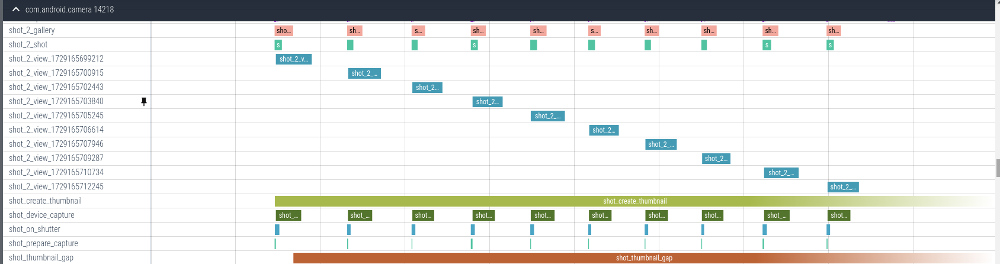
- 根据shot_2_view的时间去看当时的cpu占用, 调度, 内存情况, 图库问题, 首先不用去看log
- 在此问题中
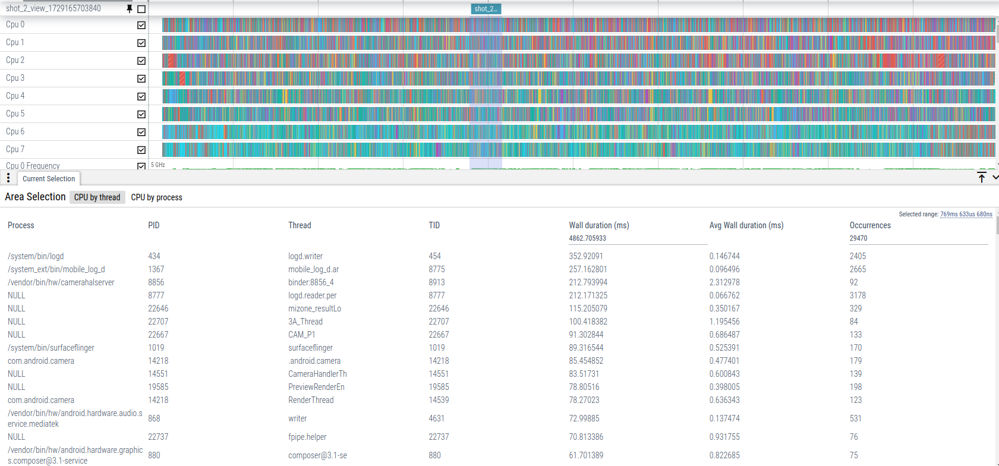
可以看到log的占用有些过于高了, user版本系统的logd不应该占这么多(一般小于5%? 待确认) - 等待周一问测试
示例
BUGN16UUPV-147
N16U升V后, shot_2_view耗时明显比u增加, 现分析log.
- 抓log, 观察P_PERFORM.
U:
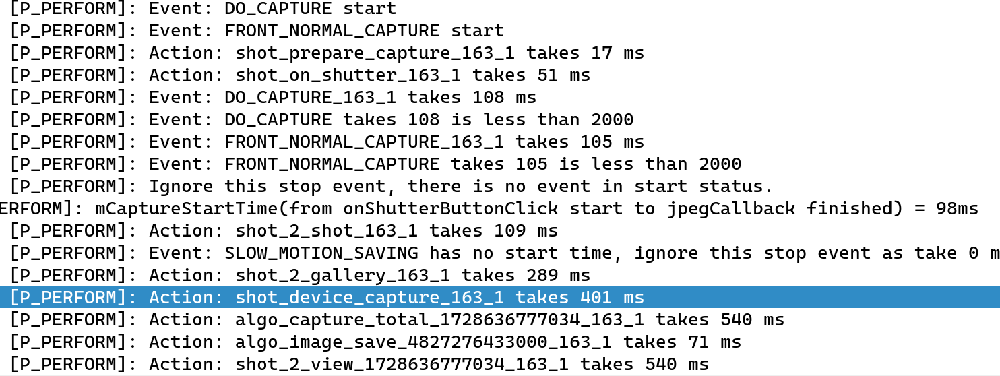
V: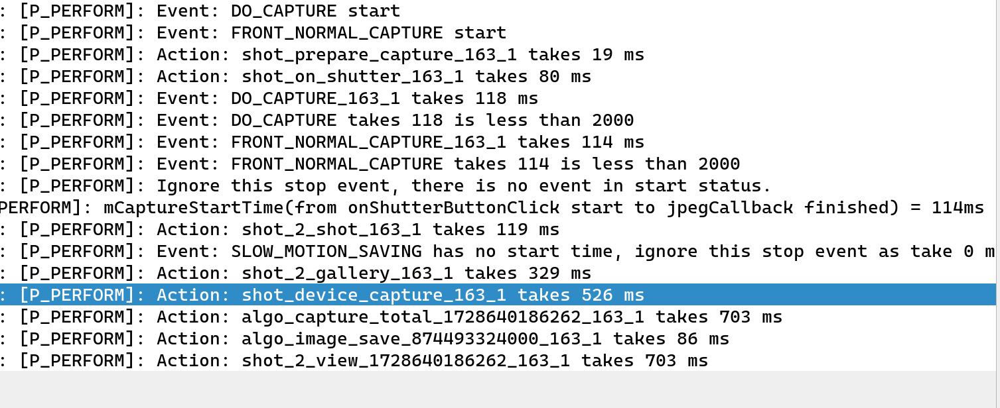
- 看到性能差异主要的点是shot_device_capture, 去查一下这个用于计算的内容.
序号 性能action …
TotalDiff
TotalDiff
TotalDiff
totaldiff=case结束后camera所有进程占用总内存 - case开始前camera所有进程占用总内存
Log分析
此jira中有多个case，以test_Pro_Capture_100_Times_0为例，下载对应case的log，对比BSPTESTREPORT/memoryResult中的result文件。
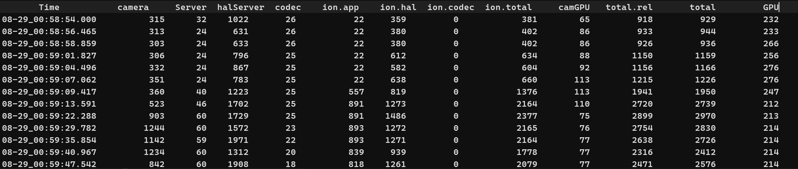
Totaldiff是用最后一行的Total-min(前五行的total)得到的，即2576-929=1647。
然后观察log中这段时间发生的事，发现最后一次按下拍照是晚于result文件中的最后一行的时间的
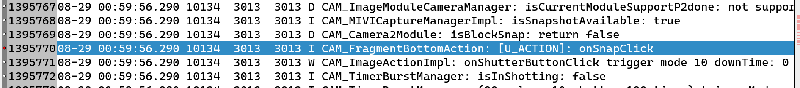
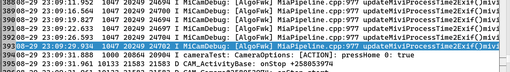
可以看出此时仍然在处理图片
这种情况就需要问测试：
- 这种情况是否正常
- 查看jekins参数是否异常
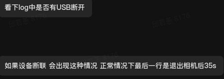
得知result文件中所取的时间点不正确。
查看新的测试结果已通过。
前后镜头切换耗时回退
前后镜头切换耗时回退
可以参考 https://wiki.n.miui.com/pages/viewpage.action?pageId=132819051 https://jira.n.xiaomi.com/browse/HTH-37717
title: 前后镜头切换耗时回退 date: 2025-03-11T09:46:48Z lastmod: 2025-03-11T09:46:48Z
前后镜头切换耗时回退
可以参考 https://wiki.n.miui.com/pages/viewpage.action?pageId=132819051 https://jira.n.xiaomi.com/browse/HTH-37717
前置录像卡顿
前置录像卡顿
BUGM9UPV-335
title: 前置录像卡顿 date: 2025-03-11T09:46:48Z lastmod: 2025-03-11T09:46:48Z
前置录像卡顿
BUGM9UPV-335
暗光丢帧不恢复分析
暗光丢帧不恢复分析
CN的N12相机的UW模式开启自动ISO后在暗光环境下： 预览（此时为30fps）->进图库->退出图库->预览（此时为低帧数）
经过排查，暗光环境下快门速度变慢，导致帧率变低，进入图库时保存了慢的快门速度（如1/14），出图库时会有一个做曝光时间的重新收敛，有个热启动的过程。
目前看来，帧数是固定在进相册之前的快门速度关联的帧数上，按照常理来说帧数应该会根据快门速度的变化而变化，但是实际上并没有。
观察到P1出帧时间异常
进入图库再返回后的sensor取帧速度变慢，从这里入手，看看具体代码。
观察到P1Node中有参数SensorParams._fps似乎相关。
跟踪metadata的设置, 目前知道request会配置fps range, 引起fps设置变化.
根据查看Camera Service中的fps range …
查看Camera Service中的fps range变化
查看Camera Service中的fps range变化
gerrit.pt.mioffice.cn/c/platform/frameworks/av/+/4180649
此patch可以跟踪fps range在CameraService中的变化.
From 91fe6b8ab1c36bc68d4d05983488663585e7ff04 Mon Sep 17 00:00:00 2001
From: tangzhiying <tangzhiying@xiaomi.com>
Date: Wed, 03 Jul 2024 16:55:27 +0800
Subject: [PATCH] [cameraperf][fpsdetect]for test
MIUIROM-2211540
Test
Change-Id: …解决问题优先策略
解决问题优先策略
解决问题优先策略
后台应用, CPU占用 频率是否正常
杀后台多时可以看看杀的都是哪些后台(三方/系统)
- 三方: 可以找测试重新测(非多后台场景)
- 系统: 需要看一下
看P1, P2出帧, 算法堆积 P1出帧有问题: 可以看看是否是request下发问题.
方法
提优先级
算法: https://gerrit.pt.mioffice.cn/c/platform/vendor/xiaomi/proprietary/mivifwk/+/4818058 P2Node: https://gerrit.pt.mioffice.cn/c/quark/mtkcam-core/+/4970783
title: 解决问题优先策略 date: 2025-03-11T09:46:48Z lastmod: 2025-03-11T09:46:48Z
解决问题优先策略
解决问题优先策略
后台应 …
连拍相关
连拍相关
BUGM12UPV-900
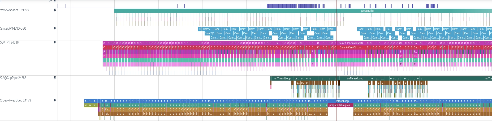
M12相机0.6x连拍到16张时，预览会卡1S左右
CPU Memory占用正常, 在切换后第一次复现, 似乎是app那边的request没有下
异常:
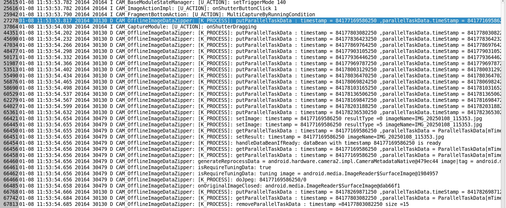
正常:
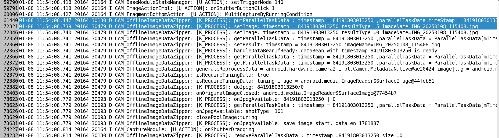
看到这边异常情况的putParallelTaskData()到setImage()用了800ms, 正常的只用300ms 暂时先转给APP看看 回复: 本地复现率不高，且没有发现卡顿时间过长的情况。
从流程上看，app下发的是一次性连续拍照： 
从测试日志上看，16帧到17帧之间，MiAlgo突然出现了forwardNotifyToFwk上的时间波动  V:  看trace发现mtkcam中的evaluateConfiguration多了100ms. 主要关注这里. U:  V:  检查发现流程没什么问题, 考虑CPU使用问题. U: …
问题分析总结
问题分析总结
问题分析总结
- 先联系测试，看看能不能单测测试出问题，并让其提供内存数据（目的是确定问题是否还存在，不存在就直接关jira。因为如果有内存泄漏问题，很容易就可以复现出来，而概率出现的问题可能是因为测试流程出了问题）
- 使用相机自动化测试工具能力扩展 中提供的工具进行分析和定位（能复现问题就好解决）
- 如果问题不包含在文档中，则自己抓函数调用栈分析
相机专项测试安装：
wget http://cnbj1-fds.api.xiaomi.net/camera-devtest/00/apks/install_apk.sh -O install_apk.sh
chmod +x install_apk.sh
./install_apk.sh 设备号
先找资料，看看前人遇到的类似问题和解决方法
Perfetto trace
系统跟踪
开启开发者模式->系统跟踪->录制跟踪记录
…